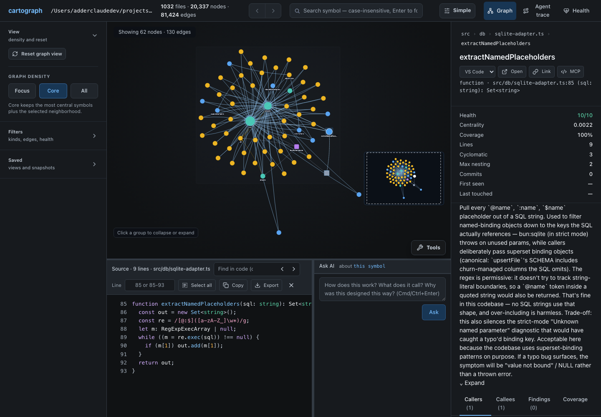

Context building
One call returns entry points, related symbols, and the code most likely to matter for a task.
Local-first code intelligence
A semantic knowledge graph for AI coding agents, with structured MCP tools and a visual viewer for navigating real codebases.
Visual graph viewer
The viewer turns Cartograph's index into a live interface: symbol history, focused graph density, source preview, detail panes, diagnostics, exports, and graph health checks all sit in one workspace.
cartograph viewer .
# opens http://127.0.0.1:8765/
Agent-grade graph tools
One call returns entry points, related symbols, and the code most likely to matter for a task.
Trace callers, callees, shortest paths, and multi-hop blast radius before editing shared behavior.
Surface biomarkers, hotspots, churn, coverage gaps, dead-code candidates, and review risk.
Walk dependents from changed files and return the tests and commands worth running next.
Optional embeddings, summaries, Ask, and rerank work through OpenAI-compatible HTTP providers.
Startup sync and debounced file watching keep MCP sessions aligned with the working tree.
A practical edit loop
Use digest, status, entry points, and hotspots to understand the project shape quickly.
Search symbols, inspect callers and callees, and build task-specific context.
Ask for affected tests, run focused checks, and compare structural deltas before reporting done.
Quickstart
Cartograph runs on Bun 1.3 or newer. The core graph does not require an LLM; local or cloud OpenAI-compatible providers are optional for summaries, semantic search, Ask, and rerank.
git clone https://github.com/adder-factory/cartograph.git
cd cartograph
bun install
bun link
cd /path/to/your/project
cartograph admin init -i
cartograph status --verbose
cartograph viewer .Language coverage
TypeScript, JavaScript, Python, Go, Rust, Java, C, C++, C#, Ruby, PHP, Swift, Kotlin, Scala, Vue, Svelte, SQL, GraphQL, HCL, Prisma, XML, YAML, shell languages, and more.
Read the language coverage report